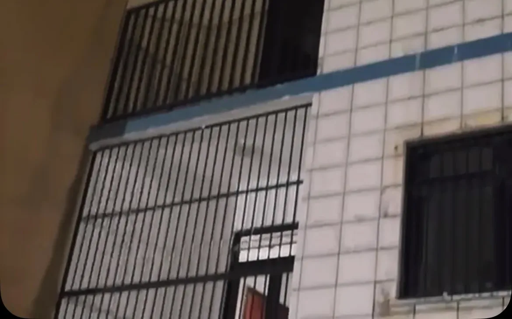
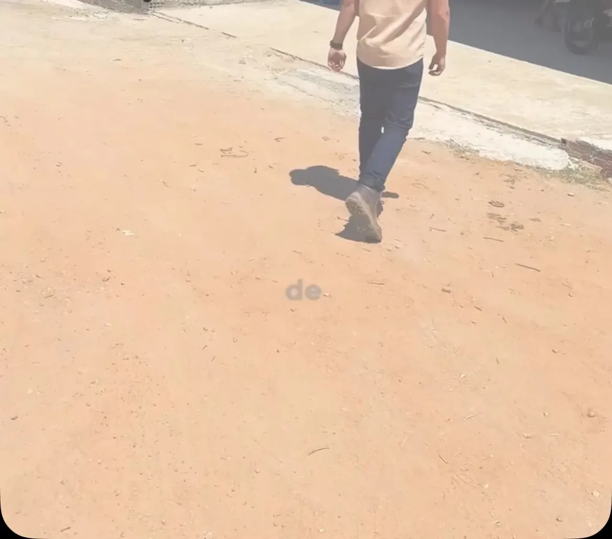
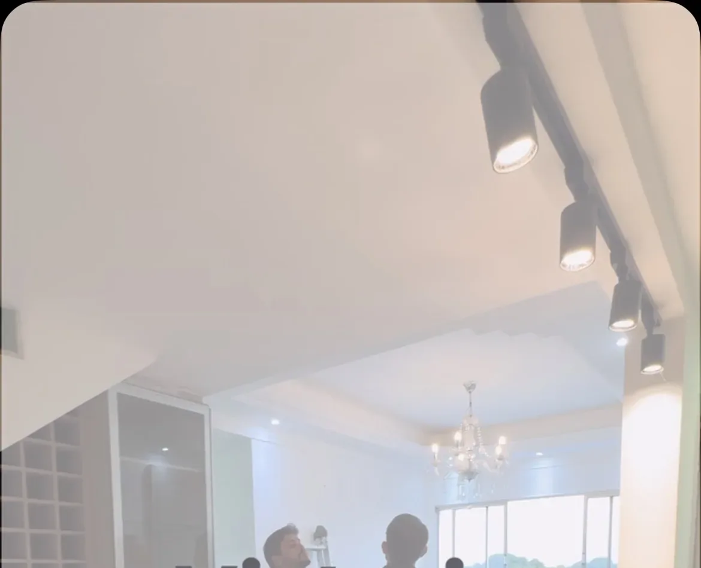

Tabuleiro do Norte Ceará
Toda obra segura começa muito antes do concreto.
Projeto, aprovação, execução e entrega conduzidos por engenharia. Você acompanha cada etapa sabendo o que está sendo feito, por que está sendo feito e quanto vai custar.
Como a obra é conduzida
Cinco etapas, nesta ordem.
Sem pular nenhuma.
A maior parte do prejuízo em obra é decidida antes da primeira parede subir. Por isso a sequência importa mais do que a pressa.
-
01
Vistoria
Visitamos o imóvel, ouvimos o que você precisa e avaliamos o que de fato precisa ser feito. É daqui que sai um orçamento honesto, sem excessos e sem custo desnecessário.
-
02
Projeto
Projeto de engenharia e arquitetura desenhado para o seu terreno, o seu uso e o seu orçamento. Nada de planta pronta adaptada na marra.
-
03
Aprovação
Documentação e aprovação junto à prefeitura resolvidas por nós. Sua obra começa regular, e continua regular até a entrega.
-
04
Execução
Equipe acompanhada por responsável técnico, com controle de material, prazo e segurança em cada frente de serviço.
-
05
Entrega
Conferência final item a item. A obra é entregue quando está do jeito que foi projetada — não quando o prazo aperta.
O que fazemos
Da ideia à entrega,
em um só lugar.
Você não precisa contratar um profissional para o projeto, outro para a prefeitura e um terceiro para tocar a obra. Tudo passa pela mesma responsabilidade técnica.
- 01Construção residencialDa fundação à entrega das chaves, com cronograma e controle de custo.
- 02ReformasDiagnóstico da causa antes do reparo, para não refazer o mesmo serviço duas vezes.
- 03Projetos de engenhariaEstrutura, instalações e memorial dimensionados para a sua obra.
- 04Projetos arquitetônicosPlanta, distribuição e uso do espaço pensados para quem vai morar ali.
- 05Administração de obrasCompra, equipe e prazo administrados por quem responde tecnicamente pela obra.
- 06Aprovação junto à prefeituraDocumentação, protocolo e acompanhamento até a liberação.
- 07Consultoria técnicaSegunda opinião sobre orçamento, patologia ou obra que já começou.
Obras e acompanhamento
O trabalho, como ele
realmente acontece.



Somos a Salt
Construir vai muito além do concreto.
Somos uma empresa de engenharia que trata obra residencial com o rigor que ela merece: planejamento antes da execução, responsabilidade técnica durante, e transparência do orçamento à entrega.
Nossa missão é transformar projetos em realidade com excelência e responsabilidade — e ser referência em engenharia e construção na região.
Os pilares que sustentam a Salt
- Ética
- Transparência
- Compromisso
- Segurança
- Respeito
Vamos tirar seu projeto do papel.
Conte o que você pretende construir ou reformar. A primeira conversa é para entender a obra — não para empurrar orçamento.